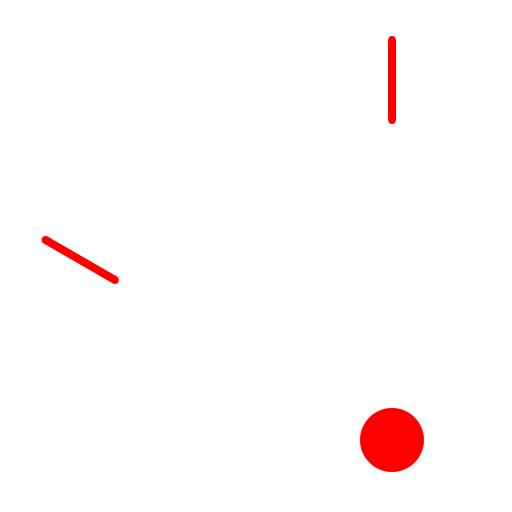

Centro, Punto, Angoli
Barra degli strumenti / icona:


Menu: Disegna - Arco - Centro, Punto, Angoli
Scorciatoia: A, R
Comandi: arcc | ar
Descrizione:
Con questo strumento potete disegnare archi con centro, raggio e angolo
sotteso noti.
Procedura:
- Scegliere la direzione per disegnare l'arco nella barra delle
opzioni.
- Posizionare il centro dell'arco utilizzando il mouse o inserendo le
coordinate dalla linea di comando.
- Definire il raggio facendo click su un punto dell'arco o inserendo le
coordinate dalla linea di comando. È anche possibile definire il raggio
direttamente da linea di comando.
- Scegliere l'angolo iniziale attraverso il mouse o inserendo le coordinate
o l'angolo nella linea di comando.
- Definire l'angolo finale allo stesso modo dell'angolo iniziale.